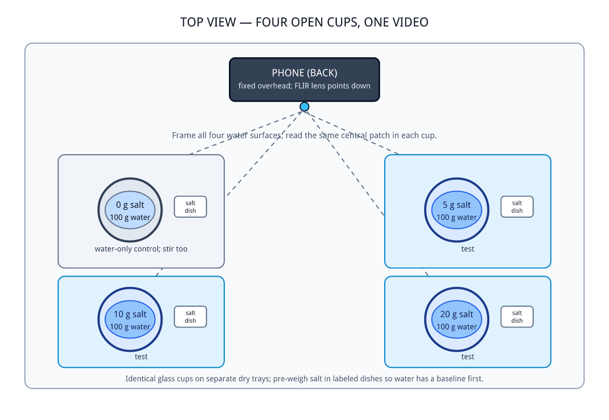
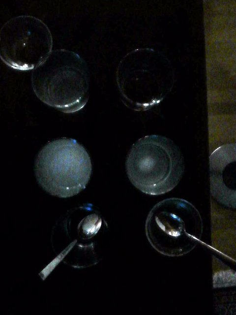
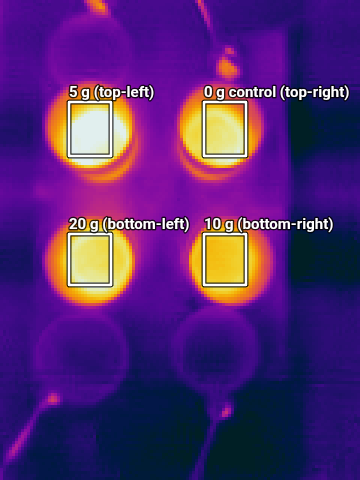
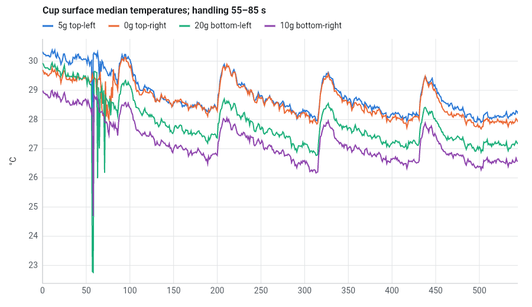
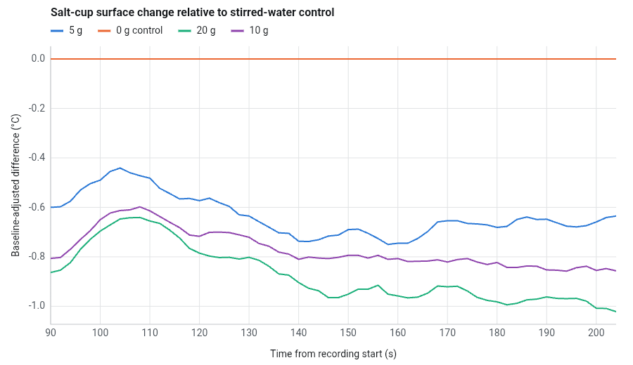

Can AI design a chemistry experiment from a kitchen pantry?
We asked AI what to do with a pantry and a food scale, did what it said with cups of water with varying degrees of salt concentration, and then it told us what we had found.
Every lab manual starts with a procedure. Someone else has already chosen the question, the amounts and the control, and the student follows along. Designing the experiment is the part students rarely get to practice. So we handed that job to an AI assistant built into Infrared Explorer, with nothing to work from but a kitchen, and pointed a thermal camera at whatever it came up with.
The ask
Our first message, word for word:
What are some interesting chemistry experiments I could do with things I likely have in my kitchen? I have a well-stocked pantry and I have a food scale, if that helps.
It offered four ideas: which powder (salt, sugar or baking soda) cools water most as it dissolves, how much carbon dioxide escapes from baking soda and vinegar, a red-cabbage acid-base indicator, and how the amount of baking soda changes how long vinegar fizzes. It also gave a safety note every kitchen lab needs: “Don’t mix pantry ingredients with cleaning products, and don’t taste the experiment samples.”
A thermal camera cannot see a color change, and the vinegar ideas measure mass and bubbles, so we replied, “I want something that uses the FLIR camera.” It chose the dissolving powders. When we asked what that would teach, it pointed out a weakness in its own design:
using equal masses of different powders compares the temperature effect of those particular portions—not the energy change per molecule or per mole, since equal masses contain different numbers of particles.
That caveat is why we narrowed the question:
Would there be an experiment like this that could be interesting and illustrate important basic science concepts while using only one substance, in different concentrations when mixed with water?
“Yes—try table salt at different concentrations,” it answered, predicting that “greater concentrations will generally show a larger temporary temperature drop—but not necessarily a perfectly straight-line increase.” That was the one to do. It has a signal the camera can see, needs only salt, water, glasses and a scale, takes half an hour, and is safe as long as nobody drinks the results.
Arguing with the plan
The AI's first plan ran five trials one at a time, with 0, 5, 10, 15 and 20 g of salt per 100 g of water, each stirred beside an untouched bowl of plain water. It predicted “a small dip—typically a few tenths of a degree, perhaps around 1 °C at the largest dose.” The plan was clear enough to argue with:
Does it make sense to have a 0 g salt does as well as a water only control? Aren't those the same thing? Also I would like to use just 4 glass cups and record all 4 at the same time. Could I weigh the salt first and then add 100 g water to each cup?
It agreed on the first two points: “Yes—the 0 g salt cup is the water-only control. Stir it for the same time and in the same way as the salt cups; you don’t need a fifth cup.” On the third it pushed back, and it was right to: “salt starts dissolving as soon as the water touches it, so you won’t have a pre-dissolving water-surface baseline.” It redrew the setup (Figure 1) and rewrote the plan. We followed the new version.

Doing it by hand
Four identical clear glass cups sat in a 2-by-2 grid on a dark table, each holding 100 g of water weighed on the food scale. Table salt went into small glass dishes beside them: 5, 10 and 20 g, with an empty dish for the 0 g cup. Seen from above, the 5 g cup was top left, the 0 g control top right, the 20 g cup bottom left and the 10 g cup bottom right. A phone with a FLIR ONE Pro clipped to it was fixed overhead, looking straight down, with all four water surfaces in view. We recorded a nine-minute video in Infrared Explorer at five frames per second. For the first 55 seconds nobody touched anything. From 55 to 85 seconds we tipped each dose into its cup and stirred all four, including the 0 g cup. Then our hands stayed out of the frame until the end.


Figure 2: Left, the cups in visible light 120 s into the recording: 5 g top left, 0 g top right, 20 g bottom left and 10 g bottom right. Right, the thermal frame at 45 s with the four patches the AI chose to measure.
Asking the AI what we found
We gave the AI the recording itself. Before it measured anything, it asked a question:
I can’t identify which position holds each salt dose from the images. Which cup is 0, 5, 10, and 20 g—top-left, top-right, bottom-left, bottom-right? And did you add and stir the samples around 55–85 seconds?
It had found the stirring window in the frames by itself. Then it wrote and ran its own code. It drew a box on the center of each water surface (Figure 2, right) and took the median temperature in each box, frame by frame. It measured each cup's change from its own 40 to 53 s baseline and subtracted the control's change in the same frames. From 90 to 140 s the 5, 10 and 20 g cups had cooled 0.58, 0.70 and 0.77 °C more than plain water. From 160 to 205 s the gaps were 0.68, 0.83 and 0.97 °C.

We read the raw chart in Figure 3 the way most people would and asked:
Why did 10 g cool more than 20 g? And why was 0g and 5g thr same? Add this to the report.
It politely declined to explain something that had not happened: “In the graph, 20 g (green) cooled more than 10 g (purple) over the plotted period; it does not show 10 g cooling more.” The cups started anywhere from 28.6 to 30.1 °C. The 10 g line sits lowest in Figure 3 because that cup started lowest. The 5 g line ends on top of the control because the 5 g cup started 0.67 °C warmer and cooled 0.67 °C more. Figure 4, which measures each cup from its own starting point, is the honest picture.

What it got right: it asked which cup was which instead of guessing, it recognized the jumps shared by all four cups as camera recalibrations, and it would not let us talk it into a pattern that was not in the data. What it hedged on: whether 20 g really cools more than 10 g. “The run therefore cannot establish a reliable fine ranking between those doses.”
The science
Dissolving salt is a tug of war. Pulling sodium and chloride ions out of the crystal costs energy. Water molecules pay some of it back as they crowd around each ion, oxygen ends toward sodium and hydrogen ends toward chloride. For table salt the cost wins by about 3.9 kJ per mole (58 g) in dilute solution, and the water pays the difference. Salt dissolves anyway because ions scattered through water are far more disordered than ions locked in a crystal. Entropy foots the bill, as it does when a released rubber band cools.
That number lets us check the AI's work. Suppose every crystal dissolved at once and no heat leaked in. Then 5, 10 and 20 g of salt would cool 100 g of water by about 0.8, 1.6 and 3 °C. The camera saw 0.68, 0.83 and 0.97 °C: most of the predicted cooling at 5 g, and about a third at 20 g. The glass shares some of the cooling, and the heat of dissolving may be smaller in strong brine. And salt water chilled by dissolving is denser than the water above it, so it sinks and stays put. Water is opaque to the long-wave infrared the camera sees, so the camera reads only the top skin. The coldest water was where the camera could not look, and salt water is good at holding a temperature difference between top and bottom.
The AI had predicted “perhaps around 1 °C at the largest dose,” and about 1 °C is what we measured. It never asked why four times as much salt produced only about 1.4 times the cooling of the 5 g cup.
What is not settled
The plan called for room-temperature water, but the water read 28.6 to 30.1 °C while the salt dishes beside the cups read about 22 °C. Every cup was cooling the whole time, and the control alone fell about 1 °C in three minutes. Subtracting the control assumes all four cups lose heat at the same rate, but a warmer cup loses heat faster. The 5 g cup started 0.67 °C above the control and the 10 g cup 0.77 °C below it, so perhaps a tenth of a degree of their difference comes from where they started rather than from the salt. Neither we nor the AI caught that at the time. Our hands also hid the cups during the 30 seconds when cooling should have been fastest, and this was a single run.
The bigger question is about students. Do they design better experiments when AI drafts the first one, or worse? Here the two best design decisions, dropping the duplicate control and putting all four cups in one video, came from the human. They came from arguing with a draft, though, and arguing with a draft is easier than writing one from nothing.
This experiment came out of a kitchen, not a textbook, and the whole conversation that designed it is open to read. Try it with your own pantry.
← Back to Infrared Explorer